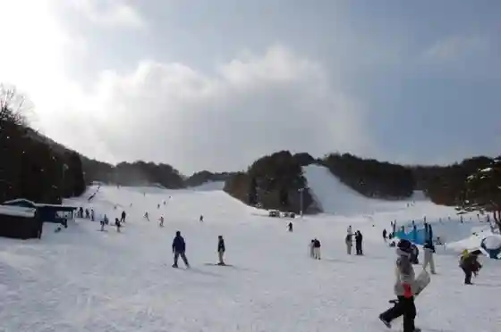
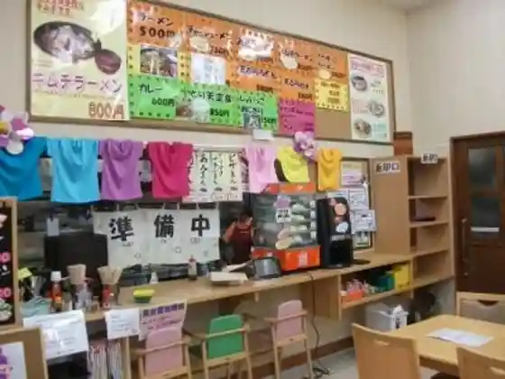
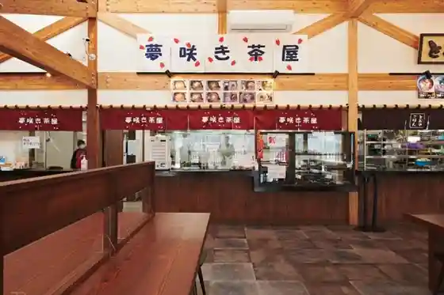
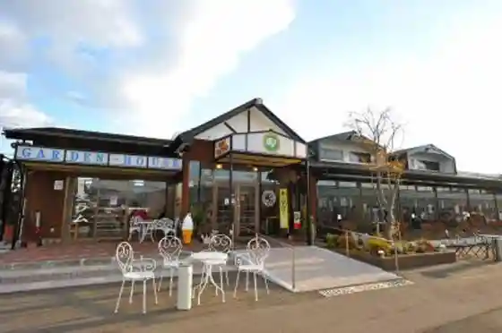

Akabane Ski Area
Tono, Iwate · 0198-65-3343 · Official / source link

Yume Sanchoku Kamigo
Tono, Iwate · 0198-65-2100 · Official / source link

Yumesaki Ki Chaya (Roadside Station Tono Kaze no Oka Nai)
Tono, Iwate · 0198-62-7714 · Official / source link

Tono Shokuniku Center Main Shop
Tono, Iwate · 0198-62-2242 · Official / source link

Jingisukan no Ambe
Tono, Iwate · 0198-62-4077 · Official / source link
Yumesaki Ki Chaya
Tono, Iwate · 0198-62-7714 · Official / source link
Tono Jingisukan Hitsuji Maru Michi (Kyu Marumanjingisu Kan Hitsuji Maru)
Tono, Iwate · 0198-66-3521 · Official / source link
Megane Hashi Chokubai Tokoro
Tono, Iwate · 0198-67-2929 · Official / source link
Tono Wasabi
Tono, Iwate · 0198-62-2111 · Official / source link
Kamihei Shuzo (Kabu)
Tono, Iwate · 0198-62-2002 · Official / source link
Fu Bagyu Ningyo
Tono, Iwate · 0198-62-1335 · Official / source link
Ganso Ake Garasu Honpo Matsuda Matsubayashi Do
Tono, Iwate · 0198-62-2236 · Official / source link
B&B Kura no Ya
Tono, Iwate · 0198-60-1360 · Official / source link
Tanpopo
Tono, Iwate · 0198-67-3955 · Official / source link
Roadside Station Miyamori Megane Hashi Chokubai Tokoro
Tono, Iwate · 0198-67-2929 · Official / source link
Kure Tsubo Soba
Tono, Iwate · 0198-62-1333 · Official / source link
Kure Tsubo Kabu
Tono, Iwate · 0198-62-1333 · Official / source link
Tengamori Garasu E Kan
Tono, Iwate · 0198-69-8766 · Official / source link
Sanchoku Tomochan
Tono, Iwate · 0198-68-2233 · Official / source link
Tabi no Kura Tono (Tono Kanko Koryu Center)
Tono, Iwate · 0198-62-1333 · Official / source link
Kojin Shrine
Tono, Iwate · 0198-62-1333 · Official / source link
Ju Tan Kei
Tono, Iwate · 0198-62-1333 · Official / source link
Taro Kappa
Tono, Iwate · 0198-62-1333 · Official / source link
Aso Numa Ko Rekidai Hi
Tono, Iwate · 0198-62-1333 · Official / source link
Yokota Castle Ruins
Tono, Iwate · 0198-62-1333 · Official / source link
Mura Hei Inari
Tono, Iwate · 0198-62-1333 · Official / source link
Kikin no Hi
Tono, Iwate · 0198-62-1333 · Official / source link
Seishin Niko no Hi
Tono, Iwate · 0198-62-1333 · Official / source link
Roadside Station (Miyamori)
Tono, Iwate · 0198-67-2929 · Official / source link
Roadside Station (Tono Kaze no Oka)
Tono, Iwate · 0198-62-0888 · Official / source link
Tono Furusato Mura
Tono, Iwate · 0198-64-2300 · Official / source link
Tono Biiru En
Tono, Iwate · 0198-66-2011 · Official / source link
Tono Furusato Mura Shizen Museum
Tono, Iwate · 0198-64-2300 · Official / source link
Tono Uma Village
Tono, Iwate · 0198-62-5561 · Official / source link
Kura Sako Kannon Do (Ken Shitei Yukei Bunkazai)
Tono, Iwate · 0198-62-2340 · Official / source link
Kashiwagi Taira Reiku Resort Shisetsu
Tono, Iwate · 0198-67-2885 · Official / source link
Nambu Bayashi
Tono, Iwate · 0198-62-1333 · Official / source link
Masuzawa Yana
Tono, Iwate · 0198-67-2885 · Official / source link
Ginga no Mori Lookout
Tono, Iwate · 0198-63-1144 · Official / source link
Haguro Iwa
Tono, Iwate · 0198-62-2340 · Official / source link
Byobu Iwa
Tono, Iwate · 0198-62-1333 · Official / source link
Mataichi no Taki to Fudo Falls
Tono, Iwate · 0198-62-2340 · Official / source link
Minwa Tori
Tono, Iwate · 0198-62-1333 · Official / source link
Megane Hashi
Tono, Iwate · 0198-62-1333 · Official / source link
Hayachine Yama
Tono, Iwate · 0198-48-2111 · Official / source link
Arakawa Kogen to Arakawa Gorge
Tono, Iwate · 0198-62-1333 · Official / source link
Iwane Hashi
Tono, Iwate · 0198-62-1333 · Official / source link
U Ko Tori Sama
Tono, Iwate · 0198-62-1333 · Official / source link
Kagura (Tono)
Tono, Iwate · 0198-62-1333 · Official / source link
Kappa Fuchi
Tono, Iwate · 0198-62-1333 · Official / source link
Masuzawa Kagura (Shi Shitei Mukei Minzoku Bunkazai)
Tono, Iwate · 0198-62-2340 · Official / source link
Gohyaku Rakan
Tono, Iwate · 0198-62-1333 · Official / source link
Gyo Sanryu Yusui Shika Yo (Shi Shitei Mukei Minzoku Bunkazai)
Tono, Iwate · 0198-62-4411 · Official / source link
Sasaki Kizen no Seika
Tono, Iwate · 0198-62-1333 · Official / source link
Sadato Highlands no Mizubasho
Tono, Iwate · 0198-62-1333 · Official / source link
Sarugaishikawa
Tono, Iwate · 0198-62-1333 · Official / source link
Ayaori no Sakura Namiki
Tono, Iwate · 0198-62-1333 · Official / source link
Yamaguchi Sansa Odori
Tono, Iwate · 0198-62-1333 · Official / source link
Zoku Ishi
Tono, Iwate · 0198-62-1333 · Official / source link
Terasawa Highlands
Tono, Iwate · 0198-62-1333 · Official / source link
Terasawa Highlands Lookout
Tono, Iwate · 0198-62-1333 · Official / source link
Tono Shishi Odori
Tono, Iwate · 0198-62-1333 · Official / source link
to Moriyama
Tono, Iwate · 0198-62-1333 · Official / source link
Nabekura Park
Tono, Iwate · 0198-62-1333 · Official / source link
Usui Toge
Tono, Iwate · 0198-62-1333 · Official / source link
Inari Ana
Tono, Iwate · 0198-62-1333 · Official / source link
to no Monogatari no Kan
Tono, Iwate · 0198-62-7887 · Official / source link
Fukusen Tera
Tono, Iwate · 0198-62-3822 · Official / source link
Hayachine Shrine
Tono, Iwate · 0198-64-2455 · Official / source link
Rokkaku Ushiyama
Tono, Iwate · 0198-62-2111 · Official / source link
Nambu Magari Ie Chiba Ie
Tono, Iwate · 0198-62-2340 · Official / source link
Nambu Shrine
Tono, Iwate · 0198-62-3303 · Official / source link
Daikagura
Tono, Iwate · 0198-62-1333 · Official / source link
Ishigami Yama
Tono, Iwate · 0198-62-2111 · Official / source link
Tono Kyodo Ningyo Mingei Village
Tono, Iwate · 0198-62-1335 · Official / source link
Densho Sono
Tono, Iwate · 0198-62-8655 · Official / source link
Tsune Ken Tera
Tono, Iwate · 0198-62-3322 · Official / source link
Tono Castle Town Museum
Tono, Iwate · 0198-62-7887 · Official / source link
Tono Ritsu Museum
Tono, Iwate · 0198-62-2340 · Official / source link
Tono Kura no Michi Gyararii
Tono, Iwate · 0198-62-2680 · Official / source link
Tono Sato Hachiman Shrine
Tono, Iwate · 0198-62-2647 · Official / source link